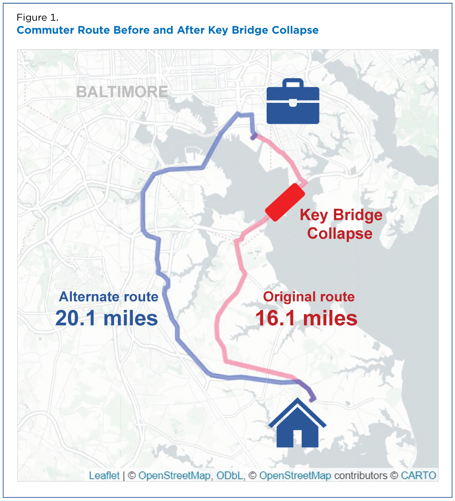
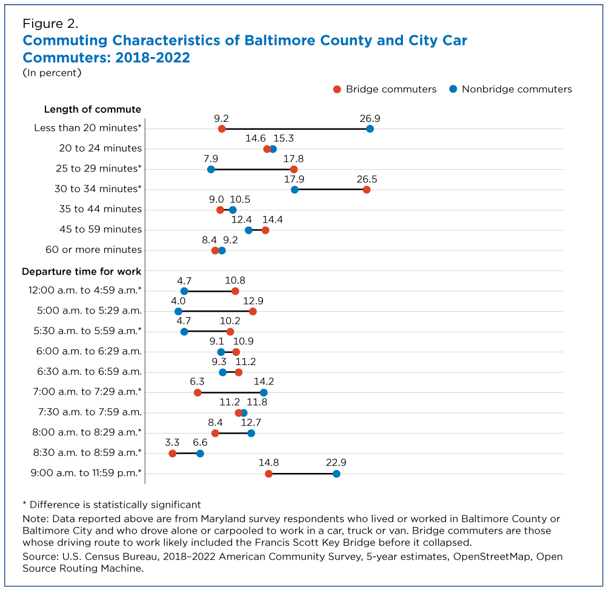
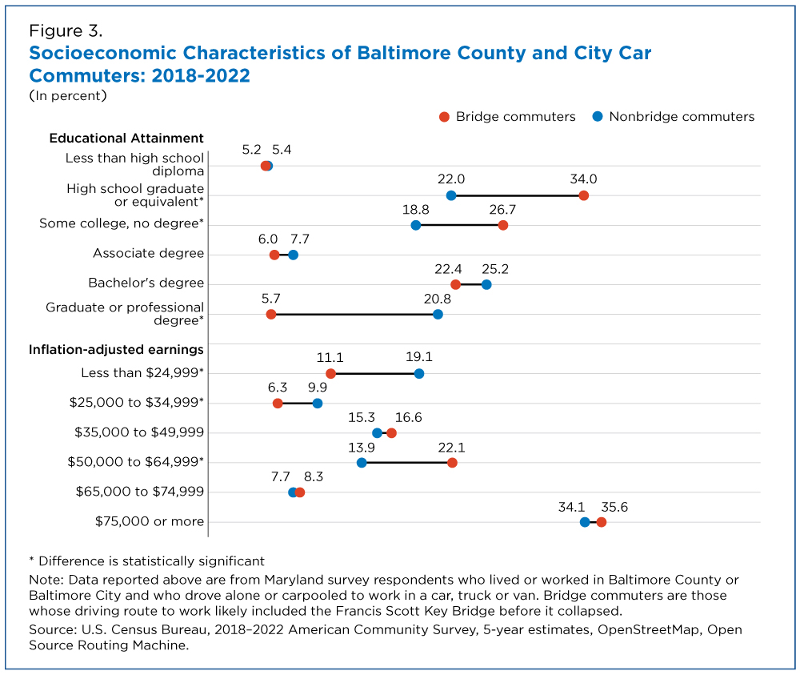
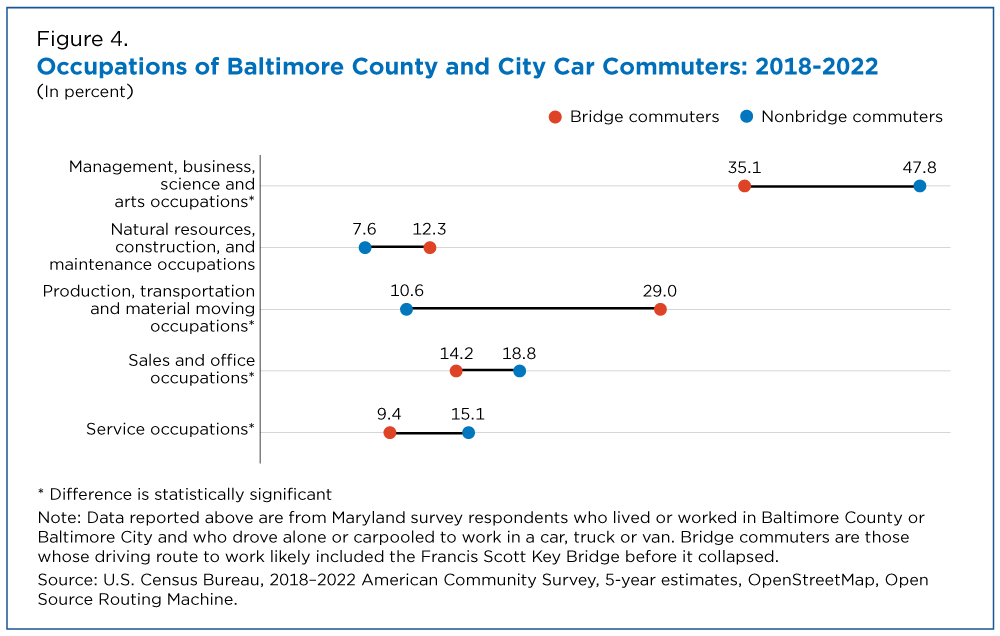

Baltimore County and Baltimore city commuters who likely drove across the Francis Scott Key Bridge had longer, earlier commutes than other car commuters in the area, according to an analysis of U.S. Census Bureau data.
The use of routing software to analyze driving routes is a new form of research for the Census Bureau and provides a means of analyzing information about people and the economy that may be useful to emergency managers.
In a Census Bureau first, we combined American Community Survey (ACS) and public mapping data to determine the likely driving routes of Baltimore area commuters. This effort, part of the Census Bureau’s Community Resilience Estimates program, adds to our growing toolkit designed to help the public and government officials prepare for and respond to emergencies. According to this analysis, commuters most likely affected by the collapse of the Key Bridge represent a distinct cross-section of workers with specific commuting patterns and socioeconomic characteristics. Bridge commuters were more likely than nonbridge commuters to: Hold a high school degree as their highest educational attainment. Earn between $50,000 and $64,999 annually. Work in production, transportation and material moving occupations. The data, now available in a newly released table package, also provide comparisons like home ownership, race and Hispanic origin, age and sex of workers who likely did and did not use the bridge. Figure 1 shows how the bridge collapse may have disrupted one hypothetical commuting route.

We combined 2018-2022 ACS data and open-source mapping software to identify a subset of commuters who likely drove across the Key Bridge before its March 26 collapse. The ACS asks respondents to provide their place of work, means of transportation to work and the time they typically begin their commute. For this analysis, we only used ACS respondents who lived in Maryland, lived or worked in Baltimore County or city, and drove alone or carpooled to work. “Bridge commuters” are defined as those who likely used the bridge based on street maps and routing data. “Nonbridge commuters” are all other car commuters in the area. The Census Bureau used ACS information and the publicly available tools, OpenStreetMap data and the Open Source Routing Machine, which calculate driving directions using road network data similar to GPS devices and other consumer navigation applications. ACS data tell us where people live and work. To calculate driving routes, we used the center of population of neighborhoods where people lived (census tracts) and their approximate work location. This enabled us to identify workers who likely used the bridge for their regular commute. Using routing software to research driving routes is new to the Census Bureau and provides a way to analyze information about people and the economy that may be useful to emergency managers.
Commuters who likely drove across the bridge had relatively long commutes even before the bridge collapsed. Approximately 17.8% reported their commute was 25 to 29 minutes long and 26.5% reported it lasted 30 to 35 minutes — a higher share than nonbridge commuters (7.9% and 17.9%, respectively). About 9.2% of bridge commuters reported commutes of less than 20 minutes compared to 26.9% of nonbridge commuters. Among ACS respondents with the longest (35 minutes or more) commutes, there were no significant differences between bridge and nonbridge commuters. Bridge commuters also tended to leave for work earlier: 10.8% reported leaving before 5:00 a.m. compared to 4.7% of nonbridge commuters. In contrast, 22.9% of nonbridge commuters reported leaving for work after 9:00 a.m. compared to only 14.8% of bridge commuters. Figure 2 shows the commute length and time of departure for work among Baltimore car commuters.

Approximately 34.0% of bridge commuters’ highest level of education was a high school diploma – a larger share than nonbridge commuters (22.0%) and all car commuters in the area (22.1%). Only 5.7% of bridge commuters had a graduate or professional degree compared to 20.8% of nonbridge commuters. A greater share (22.1%) of bridge than nonbridge (13.9%) commuters earned between $50,000 and $64,999 a year. There was no difference between the groups in the higher earnings categories. But fewer bridge commuters were in the lowest earnings category. About 11.1% earned less than $25,000 a year compared to 19.1% of nonbridge commuters. Figure 3 displays the education and earnings characteristics of Baltimore area car commuters.

About 29.0% of bridge and 10.6% of nonbridge commuters worked in occupations classified as production, transportation, and material moving occupations from 2018 to 2022. Fewer bridge than nonbridge commuters worked in management, business, science, art, sales, office and service occupations (Figure 4).

We plan to explore new ways to link and apply census data and road mapping software to other emergency management cases to help plan for disaster route contingencies and examine driving or walking access to critical services.